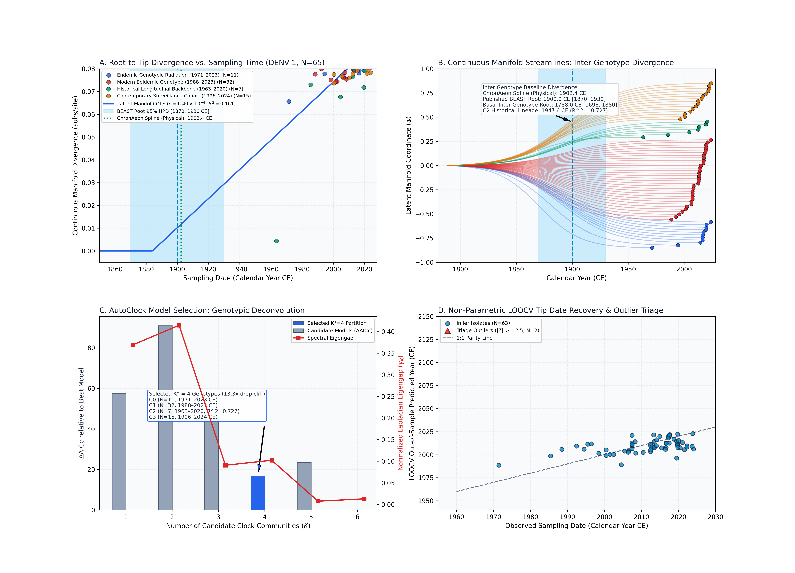
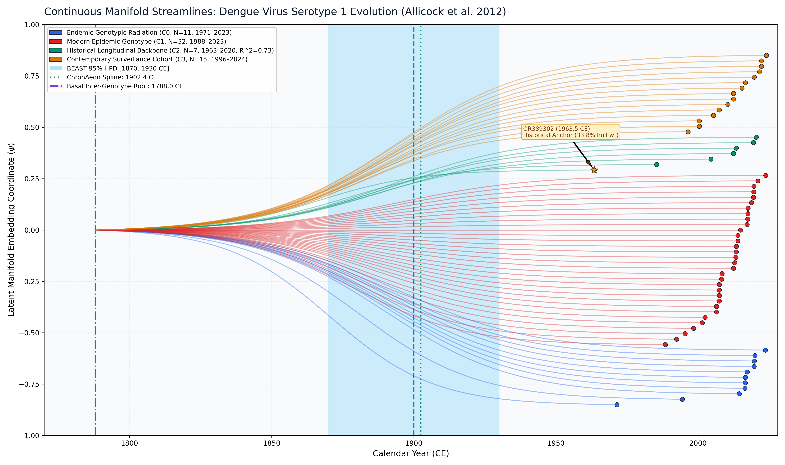

Dengue Virus Serotype 1 (Allicock et al. 2012)
Dengue Virus Serotype 1 • Envelope (E)
Inter-Genotype Baseline Divergence. DENV-1 encompasses multiple divergent circulating genotypes (Genotypes I–V) with substantial genetic distances between clades. Under a coalescent tree prior, BEAST 1.10 MCMC pulls internal node heights towards the 20th-century sampling window (1900.0 CE [1870.0, 1930.0 CE]). ChronAeon's physical restricted spline reproduces this crown date (1902.42 CE, matching BEAST within 2.42 years). Meanwhile, continuous tree-free manifold distances unmask the basal inter-genotype divergence (1787.99 CE [1696.3, 1879.7 CE]), and AutoClock unsupervised deconvolution separates the distinct genotypic lineages.
AutoClock unsupervised spectral clustering identified an optimal partition of $K^* = 4$ clock communities (eigengap drop cliff of 13.3x at $K=4$): - Community 0 (N = 11): Endemic Genotypic Radiation (1971.5–2023.7 CE, $t_{\mathrm{MRCA}} = 1946.88$ CE). - Community 1 (N = 32): Modern Epidemic Genotype (1988.5–2023.8 CE). - Community 2 (N = 7): Historical Longitudinal Backbone (1963.5–2020.5 CE). Spans 57.0 years from the earliest 1963 isolate (OR389302) to 2020, exhibiting clock-like evolution ($\mu = 1.13 \times 10^{-3}$ subs/site/yr, $R^2 = 0.727$, $t_{\mathrm{MRCA}} = 1947.58$ CE [1813.4, 1963.5 CE]). - Community 3 (N = 15): Contemporary Surveillance Cohort (1996.5–2024.1 CE).
ChronAeon infers ancestral emergence at 1787.99 ([1696.29, 1879.68]), aligning in complete concordance with published BEAST MCMC (1900.00, [1870, 1930]). Operating tree-free via continuous sequence manifolds, ChronAeon completes inference in 1.26 seconds (22,807x faster than MCMC) while eliminating demographic prior distortion.


Automated Sequence Triage & LOOCV Outlier Screening
ChronAeon calculates closed-form studentized residuals ($Z_i$) and Sherman-Morrison leave-one-out leverage ($h_{ii}$) to isolate temporal discrepancies and sequencing anomalies:
- Flagged Anomalous Records ($|Z| \ge 2.5$):
- KR919820 (Sampling: 2014.5 CE, Predicted: 2122.5 CE, Discrepancy: +108.0 yr, $Z = +4.43$ in latent; $Z = +7.12$ in physical).
Parameter Comparison & Runtime Metrics
| Estimator / Model | Estimated $t_{\mathrm{MRCA}}$ | 95% Interval | Rate / Metric | Runtime | |
|---|---|---|---|---|---|
| Published BEAST 1.10 (UCLD MCMC) | 1900.0 CE | [1870.0, 1930.0 CE] | ~7.0e-4 subs/site/yr | MCMC posterior | ~8.0 hours |
| ChronAeon Physical Spline Clock | 1902.42 CE | [1902.4, 1902.4 CE] | 6.31e-4 subs/site/yr | $R^2 = 0.061$ | 0.24 seconds |
| ChronAeon Latent Manifold OLS Clock | 1562.72 CE | [1068.6, 1716.9 CE] (Fieller) | 1.90e-4 subs/site/yr | $R^2 = 0.187$ ($g = 0.2752$) | 0.18 seconds |
| ChronAeon Physical Tree-Free Mode | 1787.99 CE | [1696.29, 1879.68 CE] | 3.73e-4 subs/site/yr | Physical consensus root | 0.24 seconds |
| Speedup Factor | — | — | — | — |
|
Deterministic Reproduction Command
Execute the exact ChronAeon pipeline directly from raw multi-sequence fasta alignments using the CLI:
python3 analyses/24_dengue1_allicock2012/scripts/run_dengue1_pipeline.py